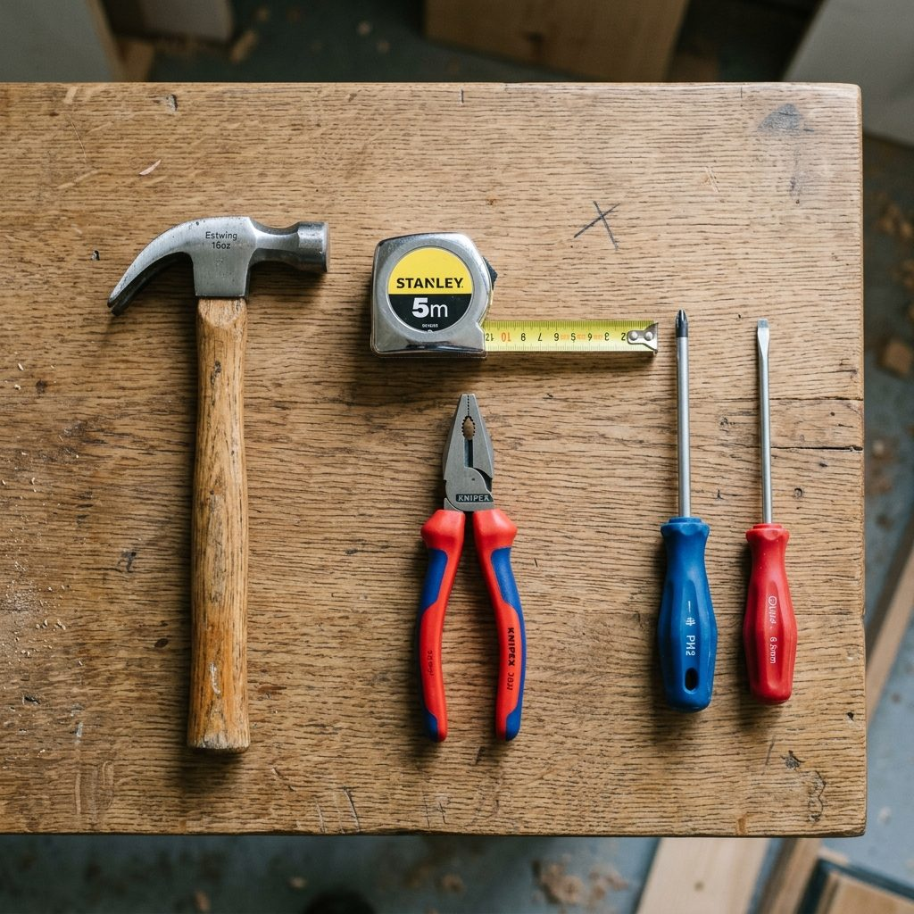
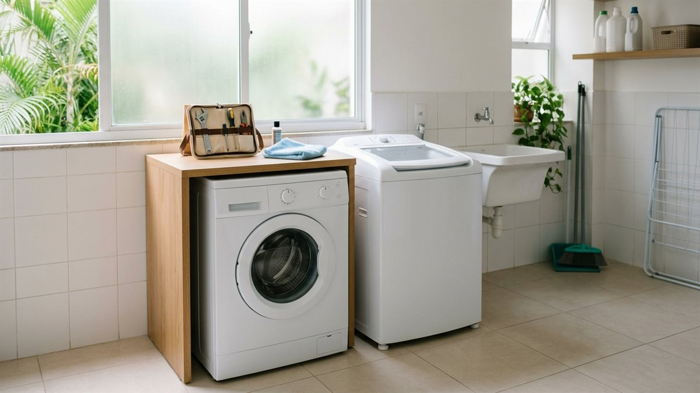

Consertos Domésticos
Por Francisco Alves
Especialista em Manutenção | Atualizado em 23 de Agosto de 2026

Consertos Domésticos

Máquina de lavar não centrifuga? 7 causas e como testar
Diagnóstico por sintoma: filtro da bomba, mangueira, trava da tampa, correia e quando chamar o técnico.

Como consertar fechadura de porta sem serralheiro: guia passo a passo
Aprenda a diagnosticar e consertar fechaduras emperradas ou frouxas em poucos minutos, economizando dinheiro com serralheiros.

5 maneiras de desentupir pia sem soda cáustica (Seguro e Eficaz)
Conheça métodos caseiros, seguros e muito baratos para desentupir a pia da cozinha sem derreter seus canos com produtos químicos perigosos.
Sobre o Autor: Francisco Alves
Com mais de 15 anos de experiência prática em reformas e reparos residenciais, Francisco dedica-se a ensinar pessoas comuns a cuidarem de seus lares de forma independente, segura e econômica.